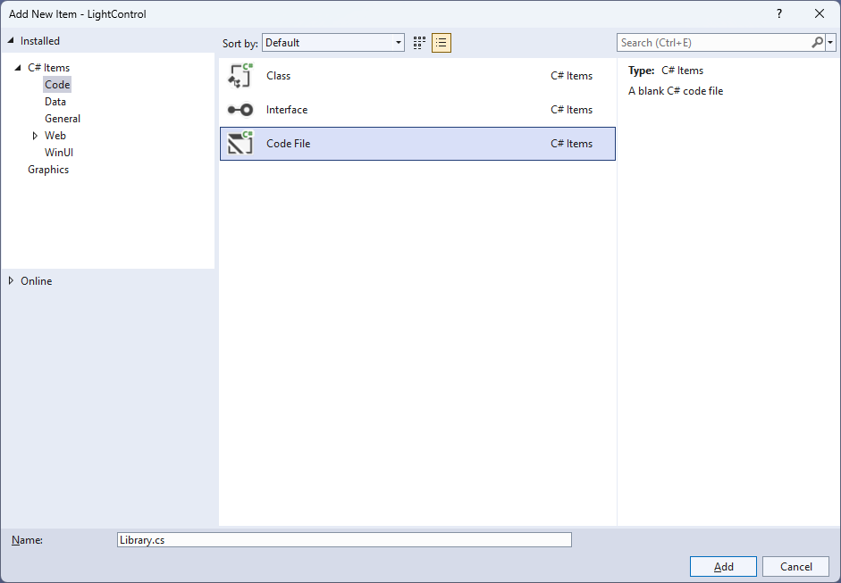
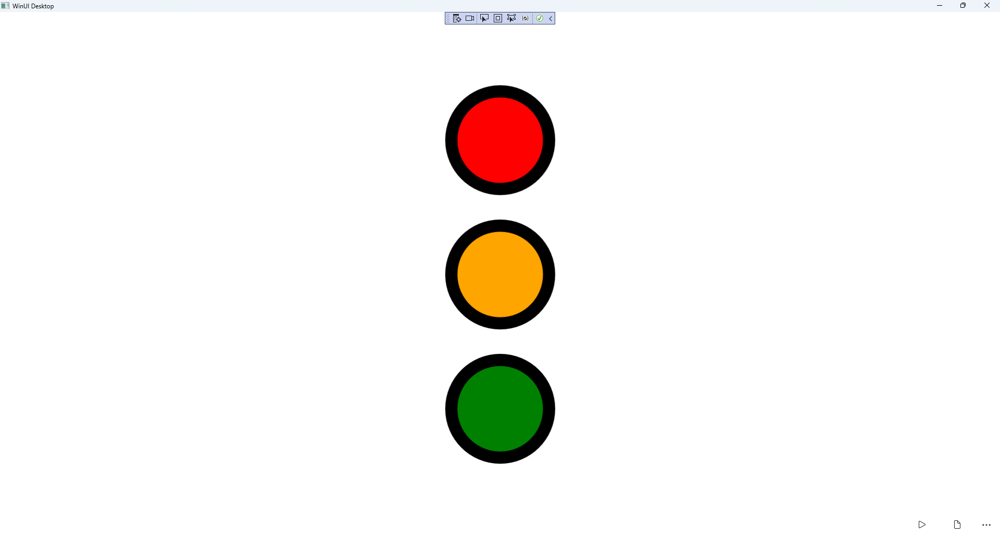

Light Control
Learn creating a Light Control using Windows App SDK with this Tutorial
Light Control shows how to create a Control that can be used as an indicator like a Light using using a toolkit from NuGet using the Windows App SDK.
Step 1
Follow Setup and Start on how to get Setup and Install what you need for Visual Studio 2022 and Windows App SDK.


Step 2
Then in Visual Studio within Solution Explorer for the Solution, right click on the Project shown below the Solution and then select Manage NuGet Packages...

Step 3
Then in the NuGet Package Manager from the Browse tab search for Comentsys.Toolkit.WindowsAppSdk and then select Comentsys.Toolkit.WindowsAppSdk by Comentsys as indicated and select Install

This will add the package for Comentsys.Toolkit.WindowsAppSdk to your Project. If you get the Preview Changes screen saying Visual Studio is about to make changes to this solution. Click OK to proceed with the changes listed below. You can read the message and then select OK to Install the package, then you can close the tab for Nuget: LightControl by selecting the x next to it.
Step 4
Then in Visual Studio within Solution Explorer for the Solution, right click on the Project shown below the Solution and then select Add then New Item…

Step 5
Then in Add New Item from the C# Items list, select Code and then select Code File from the list next to this, then type in the name of Library.cs and then Click on Add.

Step 6
You will now be in the View for the Code of Library.cs and then you need to type the following Code:
using Comentsys.Toolkit.WindowsAppSdk;
using Microsoft.UI;
using Microsoft.UI.Xaml;
using Microsoft.UI.Xaml.Controls;
using Microsoft.UI.Xaml.Data;
using Microsoft.UI.Xaml.Media;
using System.ComponentModel;
using System.Runtime.CompilerServices;
using System.Threading.Tasks;
namespace LightControl;
public class Light : Grid, INotifyPropertyChanged
{
public event PropertyChangedEventHandler PropertyChanged;
public void OnPropertyChanged([CallerMemberName] string propertyName = null) =>
PropertyChanged?.Invoke(this, new PropertyChangedEventArgs(propertyName));
// Light Properties
// Light Constructor
}
public class Library
{
// Library Members and Delay, Toggle & Load Methods
// Library Traffic & Reset Methods
}
Library.cs defines a namespace which allows classes to be defined together, usually each is separate but will be defined in Library.cs
along with adding using statements such as for the package of Comentsys.Toolkit.WindowsAppSdk.
Step 7
While still in the class of Light after Comment of // Light Properties type the following Properties:
public static readonly DependencyProperty ForegroundProperty =
DependencyProperty.Register("Foreground", typeof(Brush),
typeof(Light), new PropertyMetadata(new SolidColorBrush(Colors.Black)));
public static readonly DependencyProperty OffProperty =
DependencyProperty.Register("Off", typeof(Visibility),
typeof(Light), new PropertyMetadata(Visibility.Collapsed));
public Brush Foreground
{
get { return (Brush)GetValue(ForegroundProperty); }
set
{
SetValue(ForegroundProperty, value);
OnPropertyChanged();
}
}
public Visibility Off
{
get { return (Visibility)GetValue(OffProperty); }
set
{
SetValue(OffProperty, value);
OnPropertyChanged();
}
}
public bool IsOn
{
get { return Off == Visibility.Collapsed; }
set
{
Off = value ? Visibility.Collapsed : Visibility.Visible;
OnPropertyChanged();
}
}
Foreground and Off are Dependency Properties which are used for Data Binding
and IsOn will set the Property of Off accordingly.
Step 8
While still in the namespace of LightControl in Library.cs and in the class of Light
after the Comment of // Light Constructor type the following Constructor:
public Light()
{
Margin = new Thickness(5);
Piece element = new()
{
Stroke = new SolidColorBrush(Colors.Black)
};
element.SetBinding(Piece.FillProperty, new Binding()
{
Path = new PropertyPath(nameof(Foreground)),
Mode = BindingMode.TwoWay,
Source = this,
});
Piece overlay = new()
{
Stroke = new SolidColorBrush(Colors.Black),
Fill = new SolidColorBrush(Colors.Black),
Opacity = 0.75
};
overlay.SetBinding(VisibilityProperty, new Binding()
{
Path = new PropertyPath(nameof(Off)),
Mode = BindingMode.TwoWay,
Source = this
});
Children.Add(element);
Children.Add(overlay);
}
The Constructor will create the look-and-feel for the Control with the Properties
for Data Binding with Piece from Comentsys.Toolkit.WindowsAppSdk.
Step 9
While still in the namespace of LightControl in Library.cs and in the class of Library
after the Comment of // Library Members and Delay, Toggle & Load Methods type the following Members and Methods:
private readonly Light _red = new()
{
Foreground = new SolidColorBrush(Colors.Red)
};
private readonly Light _orange = new()
{
Foreground = new SolidColorBrush(Colors.Orange)
};
private readonly Light _green = new()
{
Foreground = new SolidColorBrush(Colors.Green)
};
private static async Task Delay(int seconds = 2) =>
await Task.Delay(seconds * 1000);
private void Toggle(bool red, bool orange, bool green) =>
(_red.IsOn, _orange.IsOn, _green.IsOn) = (red, orange, green);
public void Load(StackPanel panel)
{
panel.Children.Add(_red);
panel.Children.Add(_orange);
panel.Children.Add(_green);
}
Members will represent the three Light Controls along with a Method for Delay which will create a short pause and
Toggle which will be used to set the Property of IsOn for each Light and Load which will add the Light Controls to a StackPanel.
Step 10
Still in Library.cs for the namespace of DonutControl and in the class of Library
after the Comment of // Library Traffic & Reset Methods by typing the following Methods:
public async void Traffic()
{
Toggle(false, false, true);
await Delay();
Toggle(false, false, false);
await Delay();
Toggle(false, true, false);
await Delay();
Toggle(false, false, false);
await Delay();
Toggle(true, false, false);
await Delay();
Toggle(true, false, false);
await Delay();
Toggle(true, true, false);
await Delay();
Toggle(false, false, true);
await Delay();
}
public void Reset() =>
Toggle(true, true, true);
Traffic will go through the sequence of a UK Traffic Light for each of the Light Controls and Reset will return them to their original state.
Step 11
Step 12
In the XAML for MainWindow.xaml there will be some XAML for a StackPanel, this should be Removed:
<StackPanel Orientation="Horizontal"
HorizontalAlignment="Center" VerticalAlignment="Center">
<Button x:Name="myButton" Click="myButton_Click">Click Me</Button>
</StackPanel>
Step 13
While still in the XAML for MainWindow.xaml above </Window>, type in the following XAML:
<Grid>
<Viewbox>
<StackPanel Margin="50" Name="Display" Orientation="Vertical"
HorizontalAlignment="Center" VerticalAlignment="Center" Loaded="Load"/>
</Viewbox>
<CommandBar VerticalAlignment="Bottom">
<AppBarButton Icon="Play" Label="Play" Click="Play"/>
<AppBarButton Icon="Page2" Label="New" Click="New"/>
</CommandBar>
</Grid>
This XAML contains a Grid with a Viewbox which will Scale a StackPanel.
It has a Loaded event handler for Loadand there is an AppBarButton for Play using the Method of Play
and New using the Method of New.
Step 14
Step 15
In the Code for MainWindow.xaml.cs there be a Method of myButton_Click(...) this should be Removed by removing the following:
private void myButton_Click(object sender, RoutedEventArgs e)
{
myButton.Content = "Clicked";
}
Step 16
Once myButton_Click(...) has been removed, within the Constructor of public MainWindow() { ... } and below the line of this.InitializeComponent(); type in the following Code:
private readonly Library _library = new();
private void Load(object sender, RoutedEventArgs e) =>
_library.Load(Display);
private void Play(object sender, RoutedEventArgs e) =>
_library.Traffic();
private void New(object sender, RoutedEventArgs e) =>
_library.Reset();
Here an Instance of Library is created then below this are the Methods of Load, Play and New that will be used with the Event Handler
from the XAML, these Methods use Arrow Syntax with the => for an expression body which is useful when a Method only has one line.
Step 17
Step 18
Once running you will see the Light Control displayed, then you can select Play to cycle through the UK Traffic Light sequence or select New to start again.

Step 19